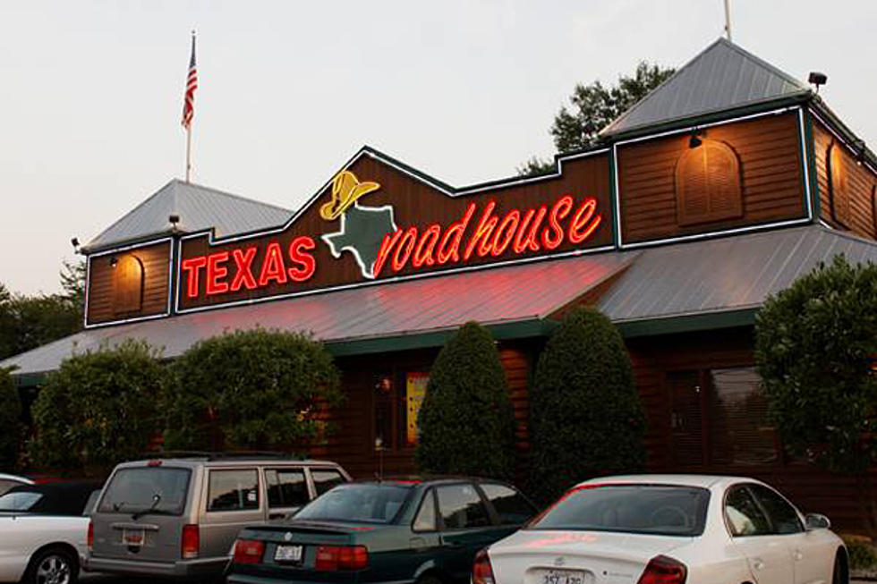
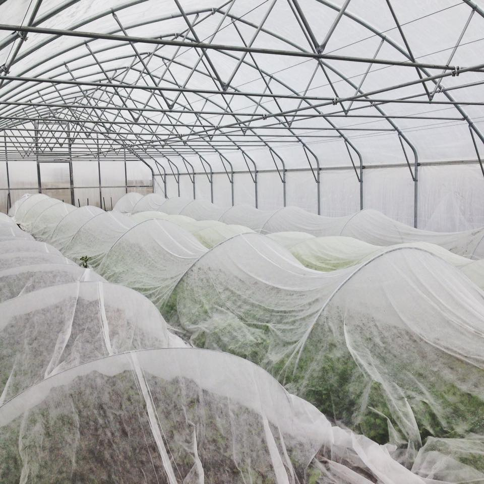

About Me
Here you will find a few fun facts about me.
- My favorite color is navy.
- I really want a German Shepard.
- I am a Interactive Digital Media: New Media major
My Summer
Below you will find a list of activities I participated in during my long summer.
- Swimming
- Working 60 hours per week
- Watching Netflix and Hulu
- Having bonfires with friends and family

My Jobs
Below you will find a list of places I worked at during the past summer.
- ARNKA Acres - A CSA garden
- Montage - A local high-class restaurant
- Texas Roadhouse... well you know what that is I hope
